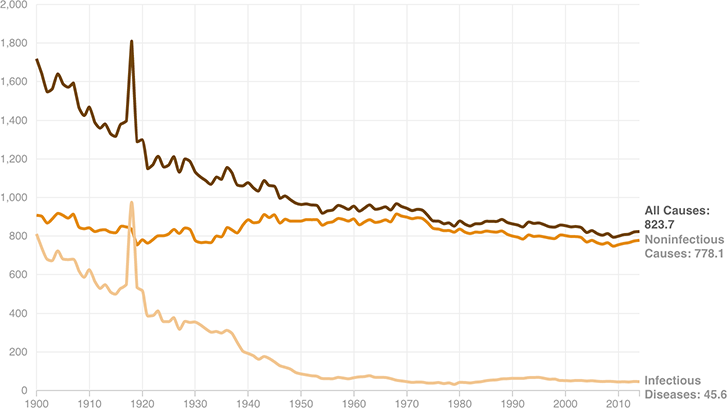

Overall And Infectious Disease Mortality Rates Have Levelled Off Since The 1950s
Mortality rate per 100,000 population (1900-2014)

Notes:
The 1918 spike in deaths was due in part to a Spanish flu pandemic.